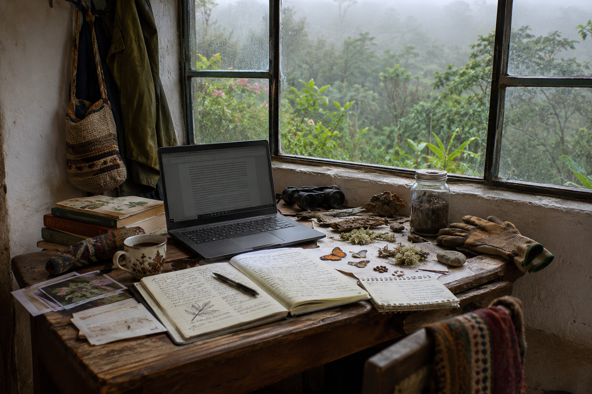

Inicio > Notas críticas > Desde Quisquiza (16 de 20)
Desde Quisquiza (16 de 20)
Sitio de investigación
Escribiendo al borde del bosque
Esta nota forma parte de una serie escrita desde Quisquiza, en los Andes colombianos, donde territorio y trabajo intelectual ya no están separados. Examina cómo ese cruce transforma mi manera de pensar la memoria, la información y las estructuras que las sostienen. Consulte todas las notas en el índice de esta sección.
He llegado a la conclusión de que mi lugar de trabajo es un tanto peculiar.
No porque viva en Quisquiza, aquí arriba, en lo alto de los Andes orientales colombianos, rodeado de bosque nuboso, niebla, lluvia, pájaros, insectos y una cantidad extraordinaria de organismos cuyos nombres todavía desconozco.
Sino porque cada vez me resulta más difícil determinar dónde empieza y dónde termina realmente mi espacio de trabajo.
Mi escritorio está dentro de casa, por supuesto. Eso está meridianamente claro. Tiene una compu, libros, cuadernos, papeles, papeles, más papales, y una acumulación bastante alarmante de cachivaches que no tienen nada que hacer sobre una mesa de trabajo. Semillas. Líquenes secos. Pedazos de corteza. Alas de mariposa. Unas cuantas piedras. Muestras de suelo. Algún que otro insecto, a veces vivo y llegado sin invitación.
(Y café. Siempre café. Esto es Colombia, sumercé bonita, y ese particular componente de la infraestructura de investigación no es negociable. Jamás).
Al otro lado de la ventana comienza el bosque. O capaz que no comienza ahí. Puede que continúe a través de la ventana, cruce el escritorio, se meta entre los cuadernos y termine colándose en cualquiera de las muchas cosas que ando garabateando.
Hace rato que dejé de intentar establecer dónde está el límite.
La mayoría de las mañanas reparto mi tiempo entre actividades que, según las clasificaciones profesionales habituales, deberían tener muy poco que ver unas con otras. Trabajo en restauración ecológica, observo organismos, saco fotografías, grabo sonidos, leo literatura académica, desarrollo modelos de clasificación y escribo sobre conocimiento y memoria.
Entonces se rompe algo, o una zanja se llena de agua, o aparece algún animal donde menos me lo esperaba, y mi agenda, delineada con cuiodadop desde hacía un mes, se va al reverendo carajo.
(Gajes del oficio, supongo).
Pero últimamemente está ocurriendo algo interesante.
Una mañana dedicada a intentar entender por qué el agua se niega a seguir la acequia que le excavé expresamente para ello modifica mi manera de pensar sobre los flujos de información. Trabajar con suelos compactados hace que ciertas discusiones sobre el cambio institucional se vuelvan bastante menos abstractas. Observar la extraordinaria complejidad de un liquen plantea preguntas medio incómodas sobre las categorías que utilizamos para describir el mundo. Y grabar los sonidos del bosque me ha llevado a reconsiderar qué queremos decir realmente cuando describimos un archivo como "silencioso".
Ninguna de estas observaciones proporciona una teoría lista para usar. No estoy sugiriendo que una montaña pueda resolver los problemas de la bibliotecología, ni que los musgos hayan desarrollado un enfoque particularmente sofisticado de la gobernanza institucional.
(Aunque, después de haber trabajado en unas cuantas "grandes instituciones"... tampoco descartaría del todo esa posibilidad, que-queré-que-te-diga).
Lo que cambia es el lugar desde el que se formulan las preguntas.
En la investigación convencional, un sitio de investigación suele entenderse como un espacio donde se realizan observaciones, se recopila información y se producen evidencias. El investigador se desplaza hasta allí, documenta lo que sucede y, finalmente, regresa a un escritorio en algún otro lugar para interpretar los resultados.
Aquí, el escritorio ya está en el campo. Y la persona que se sienta frente a él forma parte del sistema que intenta observar. Una parte ignorante, desconcertada, frecuentemente equivocada y, en ocasiones, extremadamente perdida.
Ese último detalle resulta sumamente relevante. Vivir en un lugar no significa que uno, automáticamente, lo comprenda. Yo, acá, todavía identifico erróneamente muchos organismos. Me equivoco al sembrar. Interpreto mal el movimiento del agua, subestimo el clima y descubro, a veces a costa de un precio personal considerable, que mis explicaciones estaban completamente erradas.
Mis vecinos campesinos saben cosas sobre este territorio que yo desconozco. Las especies que lo habitan responden a condiciones que apenas soy capaz de detectar. Hay procesos que se desarrollan a escalas temporales que convierten mis observaciones en algo ridículamente breve.
La proximidad no equivale a experiencia especializada. La experiencia vivida no constituye automáticamente una evidencia. Y estar familiarizado con algo no es, ni mucho menos, lo mismo que conocerlo.
Pero la proximidad tiene otro efecto. Hace mucho más difícil ignorar las consecuencias que tiene el equivocarse.
Un error de clasificación en un documento puede corregirse. Pero una intervención mal pensada en una ladera puede dejar una cicatriz que tarde años en desaparecer. Un modelo teórico puede pasar por alto una variable sin consecuencias inmediatas. Una zanja de drenaje, sin embargo, no puede darse ese lujo cuando llega la lluvia.
La distinción no es absoluta, por supuesto. Los sistemas de información también tienen consecuencias materiales, a veces devastadoras. Pero aquí esas consecuencias son constante y descaradamente visibles.
El entorno interrumpe, claro. Contradice, retrasa, introduce variables a las que nadie había invitado a participar en la investigación. Y, milagrosamente, de vez en cuando, va y coopera.
(Esteeee... Un ratito, nomás. Tampoco mucho).
Trabajar desde Quisquiza no ha hecho más fácil mi labor intelectual. Tampoco ha convertido la vida rural en una alternativa idílica a la ciudad. Hay barro, agotamiento, incertidumbre, herramientas que se rompen, mañanas heladas y una provisión aparentemente inagotable de cosas que requieren atención inmediata.
Pero sí ha hecho cada vez más difícil sostener una suposición: que el conocimiento puede producirse independientemente de las condiciones en las que se produce.
Esas condiciones no son simples datos contextuales que se mencionan en una introducción y luego, muy convenientemente, se olvidan. Influyen en lo que puede observarse, en qué preguntas adquieren importancia, en qué tipos de evidencia están disponibles y en cuánta incertidumbre está uno dispuesto a tolerar.
También influyen en el investigador.
Empecé a trabajar aquí con ciertas preguntas sobre el conocimiento, la clasificación, la memoria y las instituciones. Todavía las tengo. Pero las propias preguntas están cambiando y, si les soy sincero, no siempre en las direcciones que había previsto.
Y sospecho que eso forma parte de lo que convierte a un lugar en un sitio de investigación. No el mero hecho de que proporcione materiales para investigar, sino que sea capaz de transformar tanto al investigador como a las propias preguntas que intenta responder.
Afuera, la niebla vuelve a moverse entre los árboles, como de costumbre. Tengo trabajo pendiente en la computadora y un pedazo de tierra que me prometí revisar antes de la próxima lluvia.
Ambas cosas forman parte de la investigación de hoy.
Quisquiza no es un refugio para escapar del trabajo intelectual. Es el lugar donde ese trabajo sucede ahora. Y el bosque, por desgracia para mis cuidadosamente elaboradas teorías, no parece tener el menor interés en darme la razón.